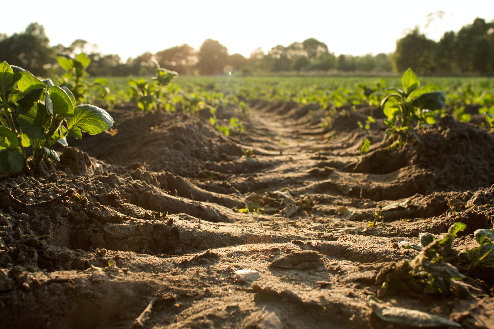

The Main Issue - Soil
"Cultivating soil continuously for too long destroys the bacteria which convert the organic matter into nutrients," - Mary Scholes, a Professor at Wits University, Animal, Plant and Environmental Sciences. Over the years, we've learned new ways to cope and ignore our ever degrading soil. Through simple things such as high use of fertilizers, external sources of nutrients, irrigation, and ploughing, we've managed to slow the process down ever so slightly. However, around 1% of our farmland degrades every year, not only that, In Africa alone, erosion itself has decreased yearly yields by over 8%, not to mention the ever growing problem of nutrient depletion.
Soil fertility has always been around, even since ancient times, traditionally, farmers spoke of soil becoming sick, tired, cold, etc. The typical solution was to just move on to different land until it recovered. However by the mid 20th century, soils and plants could easily be tested, and if "sick", could be injected with loads of nutrients. Science viewed soil as nothing more than a sort of container to house the growing plants, and therefore was of no importance.
This approach led to a massive increase in food production, however it also contributed to global warming, and the pollution of aquifers, rivers, lakes, and aquatic ecosystems. Activities associated with agriculture alone are currently responsible for around one third of all greenhouse gas emissions, and more than half of these originate from soil.